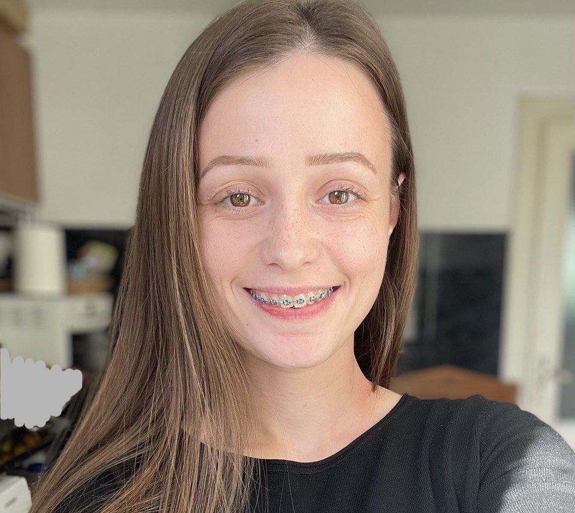

Noemi Rebeca Feceu

Description
Sociable, creative and curious nature, open to learning new things, to
improving the knowledge and skills already possessed and towards
continuous learning.
Self-motivated to consistently deliver quality
results in line with goals and required deadlines. I am looking for a job
where I can highlight and develop these qualities
Qualities
- Creative Thinking
- Teamwork
- Attention to details
- Continuous Learning
- Positive attitude
- Productive and organized
- Interes in continuous development
Education
-
Degree in Computer Science - University of Aurel Vlaicu (2023 - present)
Arad, Romania
Employment
- Customer Contact Clerk - Genesys Medical Clinic SRL
Arad, Romania
March 2021 - April 2023
-
I have developed organizational and communication skills while working
with diverse people and in fast-paced environment
-
I answered patients' questions efficiently and professionally both
face to-face and by phone or email.
-
Skilled in handling daily office tasks such as data entry and customer
service
-
Experience operating office equipment such as computers, printers and
copiers.
Courses
- Quick start in UI/UX with Webcase - 1 week
- I learned about the main UI elements
- The rules of a UI soft
- Basic knowledge of Figma
- I created a project using Figma
-
One-week Web Development (HTML/CSS)
Marathon - GoIT Romania
- I learned the basic HTML and style tags
- I created a project in Visual Studio Code
Skills
-
HTML
-
CSS
-
GitHub
-
C++
-
Microsoft Office
Other